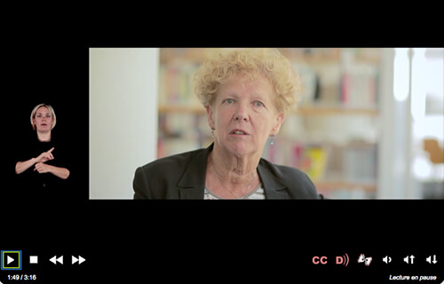
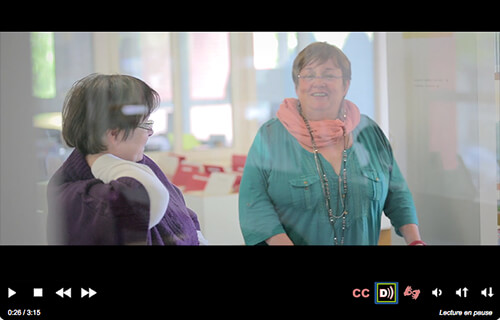

La majeure partie des contenus multimédias que vous rencontrerez sont des vidéos (avec ou sans bande-son) ou des fichiers sons.
Entrent également dans la catégorie de contenus multimédias, les éléments interactifs comme les animations ou publicités en Flash par exemple.
Tous les utilisateurs sont impactés par cette thématique puisque tous les sens sont sollicités dans la plupart des vidéos : la vue pour voir les images et les actions à l’écran, l’ouïe pour entendre les paroles et la motricité pour arrêter ou relancer la vidéo.
La grande majorité des critères de la thématique « Multimédia » du RGAA 3 se concentrent sur les alternatives mises à disposition des utilisateurs (sous-titres, transcription textuelle, audiodescription…), qui doivent être prévues lors de la phase de conception du site.
D’autres critères concernent les composants interactifs permettant de contrôler les contenus multimédias (les boutons de lecture, pause, volume, etc.). Ces problématiques seront traitées dans un futur guide à destination des développeurs.
Identifier le média
Lorsque vous insérez du contenu multimédia dans une page web, vous devez l’identifier, le mieux étant de le faire précéder d’un titre.
Ce titre peut reprendre celui de l’élément lui-même s’il en possède un. Il doit permettre de comprendre quelle est l’information présentée dans ce contenu. Tout élément multimédia doit être considéré comme un contenu à part entière et donc être structuré par un titre. Nous vous renvoyons à la fiche « Les titres, ou le plan de la page » du guide Contribuer sur le web de manière accessible pour la mise en place de ce titre.
Permettre la compréhension d’un média sans le son
Sous-titres
Il ne faut pas confondre le sous-titrage pour la traduction (subtitles) et le sous-titrage pour sourds et malentendants (closed captions). Ces deux types de sous-titrage poursuivent des buts différents. Dans le cadre du RGAA 3.0, les sous-titres doivent être rédigés dans la langue du média concerné. Ainsi, si la vidéo est en anglais par exemple, les sous-titres doivent être en anglais.
Les sous-titres ne concernent que les vidéos. Ils doivent reprendre toutes les informations descriptives de la vidéo : les dialogues de personnages, la voix-off ou même un bruit qui donne un sens et qui permet de comprendre une action.
Les sous-titres doivent êtres correctement synchronisés. En outre, ils doivent être activables et désactivables depuis le lecteur. Si le lecteur ne propose pas cette fonctionnalité, alors il est possible de mettre deux vidéos à disposition : une vidéo sans les sous-titres et une vidéo avec les sous-titres. Chacune peut être placée sur une page différente, l’important est que l’utilisateur comprenne aisément qu’il existe une version avec les sous-titres. Le plus simple sera alors de créer un lien avant la vidéo sans les sous-titres qui mène vers la vidéo avec les sous-titres et au-dessus de la vidéo avec les sous-titres, créer un lien qui ramène vers la vidéo sans les sous-titres.
Important : les incrustations de texte et les sous-titres sont soumis aux mêmes exigences que les textes en matière de contrastes. Référez-vous au chapitre « Contrastes » de la fiche 6 : Couleurs pour en savoir plus. De même, en France, des normes en matière de code couleur existent pour les sous-titres pour personnes sourdes et malentendantes.
Pensez à la langue des signes (LSF)
Les sous-titres ne sont pas forcément une alternative suffisante pour les personnes malentendantes. En effet, certaines personnes sourdes ou malentendantes ne lisent et ne comprennent que la langue des signes. C’est pourquoi prévoir en amont une traduction du contenu audio en LSF constitue une alternative complémentaire de haute qualité.
Dans ce cas, la traduction en LSF doit être accolée à la vidéo, même pour les vidéos diffusées en direct. Vous pouvez voir un exemple de vidéo traduite en LSF : pour cela, il faut activer l’option « Afficher la version avec langue des signes » dans le lecteur vidéo.

Transcription textuelle
La transcription textuelle concerne les vidéos et les fichiers audios seuls.
Une transcription textuelle est la retranscription en texte de tous les contenus audibles et informatifs de la vidéo. Elle reprend :
la totalité de ce qui y est exprimé oralement ;
toutes les informations descriptives nécessaires à une compréhension équivalente de l’action.
Ces informations textuelles doivent être présentées dans l’ordre chronologique de leur apparition dans la vidéo.
Une transcription textuelle est un contenu texte structuré, comme tout autre contenu texte. Selon les besoins, n’hésitez pas à utiliser les listes, les titres, etc.
Mise à disposition de la transcription textuelle
La mise à disposition pour les utilisateurs de cette transcription textuelle peut se faire de plusieurs manières :
elle peut être située juste en dessous de la vidéo elle-même, en précisant de quoi il s’agit ;
elle peut également être située dans une autre page que celle de la vidéo. Il suffit alors de placer un lien sous la vidéo qui mène vers cette page.
Pour les vidéos diffusées en direct, il convient de mettre à disposition de l’utilisateur soit des sous-titres synchronisés, soit une transcription textuelle. Celle-ci doit être accessible de la même façon que toute autre transcription textuelle de vidéo (cf. Mise à disposition de la transcription textuelle).
Permettre la compréhension d’un média sans l’image
Audiodescription
L’audiodescription ne concerne que les vidéos.
Une audiodescription est une narration ajoutée à la piste sonore de la vidéo pour décrire les détails visuels importants qui ne peuvent être compris à partir de la piste sonore principale seulement.
L’audiodescription d’une vidéo fournit de l’information à propos des actions, des personnages, des changements de scènes, du texte apparaissant à l’écran et d’autres contenus visuels (par exemple, les mimiques signifiantes, comme quelqu’un qui approuverait de la tête en silence). Vous pouvez écouter un exemple de vidéo audiodécrite : pour cela, il faut activer l’option « Activer l’audio description » dans le lecteur vidéo.

Lorsque toute l’information de la vidéo est déjà donnée dans la piste audio, aucune audiodescription supplémentaire n’est requise. Par exemple, dans le cadre d’une interview, il est facile d’éviter le besoin d’audiodescription en annonçant le nom et la fonction des interlocuteurs, qui sont souvent repris en cartouche visuellement. Si ce besoin de description sonore est anticipé, l’audiodescription peut devenir superflue. Prendre en compte ce besoin en conception est moins coûteux, alors pensez-y !
L’audiodescription doit être synchronisée avec la vidéo, et comme les sous-titres, elle doit pouvoir être activée et désactivée.
Volume des dialogues
Dans le cas de fichiers sons seuls, vous devez veiller à ce que les dialogues soient suffisamment audibles. Plusieurs solutions sont possibles si ce n’est pas le cas :
votre lecteur permet de désactiver l’arrière-plan sonore ;
il existe une version alternative de la vidéo sans l’arrière-plan sonore ou avec un volume des dialogues plus élevés.
Pas de lancement automatique
Vous devez éviter au maximum de lancer les contenus multimédia qui comportent du son automatiquement au chargement de la page. Ces paramètres existent souvent pour les vidéos que l’on intègre : or, même si on donne à l’utilisateur la possibilité de désactiver le son, il est préférable de ne pas rendre la lecture automatique.
Médias non temporels
Par « médias non temporels », le RGAA désigne des médias créés avec des technologies différentes de HTML, CSS et JavaScript. Il s’agit en général d’animations ou d’activités interactives réalisées à l’aide d’une technologie qui nécessite une extension comme Flash, Java ou Silverlight.
Les exigences en matière d’accessibilité web pour les médias non temporels dépendent de la technologie que vous allez utiliser pour les produire :
médias non temporels produits avec Flash ou Java : une alternative est nécessaire. En effet, même si de nombreux standards d’accessibilité permettent en théorie de rendre un média Flash accessible, des utilisateurs ayant recours à des modes d’interaction très spécifiques ne réussiront jamais à l’utiliser.
médias non temporels produits avec Silverlight : une alternative peut être nécessaire.
Note : les médias produits avec svg ou canvas ne sont pas considérés comme des médias non temporels. En effet, ce sont des médias avec lesquels on utilise généralement JavaScript, qui est une technologie parfaitement accessible.
Pour chaque média non temporel, il est demandé à ce qu’une alternative accessible soit fournie. Une alternative accessible permet par exemple de s’assurer qu’un utilisateur qui ne peut pas utiliser de souris et qui navigue uniquement à l’aide du clavier puisse réaliser les mêmes actions qu’un utilisateur valide. Nous vous renvoyons au guide impacts utilisateurs des médias non temporels pour en savoir plus.
L’utilisateur doit pouvoir atteindre l’alternative au média non temporel à l’aide d’un lien présent sur la même page. Ce lien devra être clairement identifiable et situé à proximité du contenu, et devra mener à l’alternative accessible. Cette alternative peut être contenue soit dans la page elle-même (le lien sera alors une ancre), soit dans une autre page.